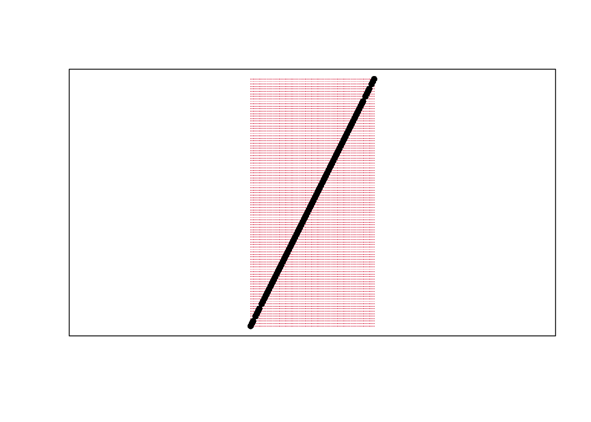

11 Small Scale Projects
11.1 An R Code Chunk
Save the following code as CodeChunk.R
sum_squared <- function(x1, x2) {
y <- (x1 + x2)^2
return(y)
}
x <- c(0,1,3,10,6)
sum_squared(x[1], x[3])
sum_squared(x, x[2])
sum_squared(x, x[7])
sum_squared(x, x) Clean the workspace In the right panels, manually cleanup
- save the code as MyFirstCode.R
- clear the environment and history (use the broom in top right panel)
- clear unsaved plots (use the broom in bottom right panel)
Replicate using the grahical user interface (GUI) while in Rstudio either using a “point-click” or “console” method
GUI: point-click click ‘Source > Source as a local job’ on top right
GUI: console into the console on the bottom left, enter
source('MyFirstCode.R')CLI Alternatives (Skippable) There are also alternative ways to replicate via the command line interface (CLI) after opening a terminal
CLI: console
Rscript -e "source('CodeChunk.R')"CLI: direct
Rscript CodeChunk.RNote that you can open a new terminal in RStudio in the top bar by clicking ‘tools > terminal > new terminal’
11.2 An R Markdown Document
11.2.1 Copy/Paste Example
Download
And download source file Directly from DataScientism.Rmd
Replicate
You can now create the primers by opening the Rstudio GUI and then point-and-click.
Alternatively, you can use the console to run
rmarkdown::render('DataScientism.Rmd')11.2.2 A Homework Example
Below is a template of what homework questions (and answers) look like. Create an .Rmd from scratch that produces a similar looking .html file.
Question 1 Simulate 100 random observations of the form \(y=x\beta+\epsilon\) and plot the relationship. Plot and explore the data interactively via plotly, https://plotly.com/r/line-and-scatter/. Then play around with different styles, https://www.r-graph-gallery.com/13-scatter-plot.html, to best express your point.
Answer I simulate \(400\) observations for \(\epsilon \sim 2\times N(0,1)\) and \(\beta=4\), as seen in this single chunk. Notice an upward trend.
n <- 100
E <- rnorm(n)
X <- seq(n)
Y <- 4*X + 2*E
library(plotly)
plot_ly( data=data.frame(X=X,Y=Y), x=~X, y=~Y)Question 2 Verify the definition of a line segment for points \(A=(0,3), B=(1,5)\) using a \(101 \times 101\) grid. Recall a line segment is all points \(s\) that have \(d(s, A) + d(s, B) = d(A, B)\).
Answer
library(sf)
s_1 <- c(0,3)
s_2 <- c(1,5)
Seg1 <- st_linestring( rbind(s_1,s_2) )
grid_pts <- expand.grid(
x=seq(s_1[1],s_2[1], length.out=101),
y=seq(s_1[2],s_2[2], length.out=101)
)
Seg1_dist <- dist( Seg1 )
grid_pts$dist <- apply(grid_pts, 1, function(s){
dist( rbind(s,s_1) ) + dist( rbind(s,s_2) ) })
grid_pts$seg <- grid_pts$dist == Seg1_dist
D_point_seg <- st_multipoint( as.matrix(grid_pts[grid_pts$seg==T,1:2]) )
D_point_notseg <- st_multipoint( as.matrix(grid_pts[grid_pts$seg==F,1:2]) )
plot(Seg1)
points(D_point_notseg, col=2, pch='.')
points(D_point_seg)
box()
11.4 Getting help w/ R Markdown
For more guidance on how to create Rmarkdown documents, see
- https://github.com/rstudio/cheatsheets/blob/main/rmarkdown.pdf
- https://cran.r-project.org/web/packages/rmarkdown/vignettes/rmarkdown.html
- http://rmarkdown.rstudio.com
- https://bookdown.org/yihui/rmarkdown/
- https://bookdown.org/yihui/rmarkdown-cookbook/
- https://dept.stat.lsa.umich.edu/~jerrick/courses/stat701/notes/rmarkdown.html
- An Introduction to the Advanced Theory and Practice of Nonparametric Econometrics. Raccine 2019. Appendices B & D.
- https://rmd4sci.njtierney.com/using-rmarkdown.html
If you are still lost, try one of the many online tutorials (such as these)
- https://www.rstudio.com/wp-content/uploads/2015/03/rmarkdown-reference.pdf
- https://github.com/adam-p/markdown-here/wiki/Markdown-Cheatsheet
- https://www.neonscience.org/resources/learning-hub/tutorials/rmd-code-intro
- https://m-clark.github.io/Introduction-to-Rmarkdown/
- https://www.stat.cmu.edu/~cshalizi/rmarkdown/
- http://math.wsu.edu/faculty/xchen/stat412/HwWriteUp.Rmd
- http://math.wsu.edu/faculty/xchen/stat412/HwWriteUp.html
- https://holtzy.github.io/Pimp-my-rmd/
- https://ntaback.github.io/UofT_STA130/Rmarkdownforclassreports.html
- https://crd150.github.io/hw_guidelines.html
- https://r4ds.had.co.nz/r-markdown.html
- http://www.stat.cmu.edu/~cshalizi/rmarkdown
- http://www.ssc.wisc.edu/sscc/pubs/RFR/RFR_RMarkdown.html
- http://kbroman.org/knitr_knutshell/pages/Rmarkdown.html